library(tidyverse)
library(readxl)
pine_df <- read_csv("data/pine_needles.csv")Lecture: Graphing Effectively
Boxplots, group comparisons, and saving a publication-ready figure
Graphing
ggplot2
R
Boxplots with jittered raw points, writing axis labels and titles properly with labs(), mapping color and fill by group, histograms and density curves, plotting mean ± SE directly with stat_summary(), faceting, a quick theme tour, custom colors and legends with scale_color_manual(), and a real ggsave() drill — all on the pine needle dataset.
Where We Left Off
Last time you:
- Computed mean, median, SD, and SE — by hand and with
summarize() - Fixed the
length()trap withsum(!is.na()) - Got tidy per-group tables with
group_by()+summarize()
Note
✅ Key idea from Describing Your Data
You now have real numbers describing shady vs. sunny needles. Today we make those numbers visible — and save the result properly.
Note
Today’s roadmap
- The
ggplotgrammar, recapped - Boxplots done right — with raw points
- Axis labels and titles, done right
- Mapping color by group
- Histograms and density curves
- Plotting mean ± SE directly
- Faceting and a quick theme tour
- Custom colors and legends with
scale_color_manual() ggsave(), for real this time
Part 1 · The ggplot Grammar, Recapped
The ggplot Grammar, Recapped
Every ggplot is three pieces joined with +:
- data — which data frame
- aes() — which columns map to x, y, color, fill…
- geom — how to draw it
Note
✅ Key idea
Everything today is the same three pieces — we’re just adding more layers and more polish on top of them.
Tip
🖐 Recap from Getting Started
ggplot(pine_df, aes(x = n_s, y = length_mm)) +
geom_point()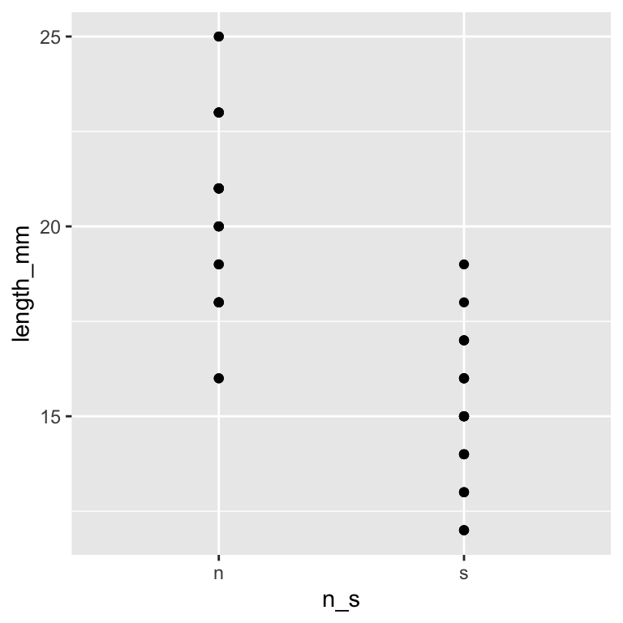
Part 2 · Boxplot Anatomy
Boxplot Anatomy
pine_box_plot <- ggplot(pine_df, aes(x = n_s, y = length_mm, fill = n_s)) +
geom_boxplot(alpha = 0.6, outlier.shape = NA) +
labs(
title = "Needle Length by Side of Tree",
x = "Side (n = shady, s = sunny)",
y = "Needle length (mm)",
fill = "Side"
) +
theme_minimal(base_size = 9) +
theme(legend.position = "none")
pine_box_plot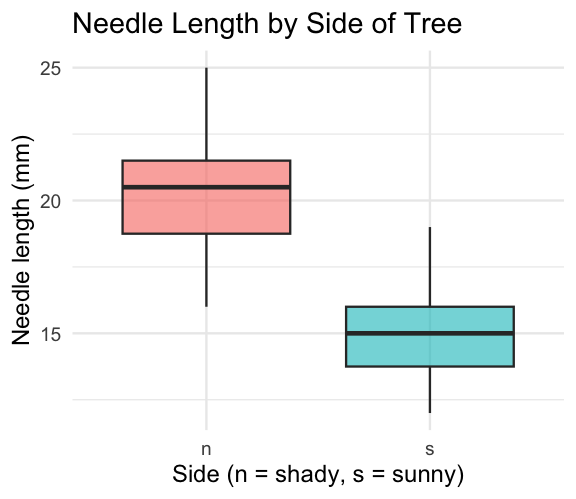
Boxplot anatomy:
- Middle line = median
- Box edges = 25th and 75th percentile (IQR)
- Whiskers = 1.5 × IQR
- Dots beyond whiskers = outliers
📖 R4DS §9 — Layers
Boxplot + Raw Points
Note
🔮 Predict first: With only 6 needles per side per tree, does a boxplot alone show you everything? What might it hide?
pine_jitter_plot <- ggplot(pine_df, aes(x = n_s, y = length_mm, fill = n_s)) +
geom_boxplot(alpha = 0.5, outlier.shape = NA) +
geom_point(
position = position_jitter(width = 0.15, seed = 42),
alpha = 0.6,
size = 2
) +
labs(
title = "Needle Length by Side of Tree",
x = "Side of tree",
y = "Needle length (mm)",
fill = "Side"
) +
theme_minimal(base_size = 9) +
theme(legend.position = "none")
pine_jitter_plot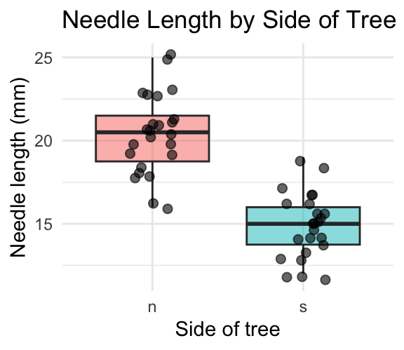
position_jitter(width = 0.15)spreads points sideways so they don’t overlapseed = 42— same jitter layout every time you renderalpha = 0.6— semi-transparent, so overlapping points are still visible
Tip
Always show the raw points alongside a boxplot when n is small — every point matters, and a box alone can hide a bimodal or lopsided pattern.
Part 2b · Axis Labels and Titles, Done Right
Before labs() — Never Ship This
ggplot(pine_df, aes(x = n_s, y = length_mm, fill = n_s)) +
geom_boxplot(alpha = 0.6, outlier.shape = NA) +
theme_minimal(base_size = 9) +
theme(legend.position = "none")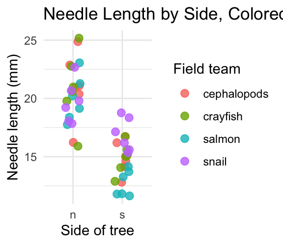
Important
The x-axis reads n_s and the y-axis reads length_mm — the literal column names, not something a reader outside your lab would understand.
Warning
⚠️ Watch out!
A plot with default column-name axes is a plot that only makes sense to you, today. Six months from now, even you may not remember what n_s meant.
labs() — Every Piece of Text on the Plot
ggplot(pine_df, aes(x = n_s, y = length_mm, fill = n_s)) +
geom_boxplot(alpha = 0.6, outlier.shape = NA) +
labs(
title = "Needle Length by Side of Tree",
subtitle = "Four field teams, four trees",
x = "Side of tree (shady = n, sunny = s)",
y = "Needle length (mm)",
fill = "Side",
caption = "Data: pine_needles.csv"
) +
theme_minimal(base_size = 9) +
theme(legend.position = "none")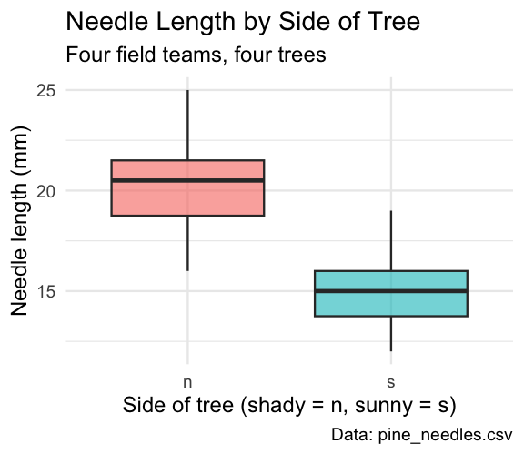
One function, five jobs:
| Argument | Controls |
|---|---|
title |
main title |
subtitle |
smaller text under the title |
x / y |
axis labels |
caption |
small text, bottom-right |
color/fill |
legend title for that aesthetic |
Note
✅ Key idea
labs() never touches the data or the statistics — only what a reader sees written on the plot. Change it freely.
labs() — the Legend Title Trap
# Whichever aesthetic name you mapped, use that same name in labs()
ggplot(pine_df, aes(x = n_s, y = length_mm, color = group)) +
geom_point(position = position_jitter(width = 0.15, seed = 42)) +
labs(color = "Field team") # matches aes(color = group)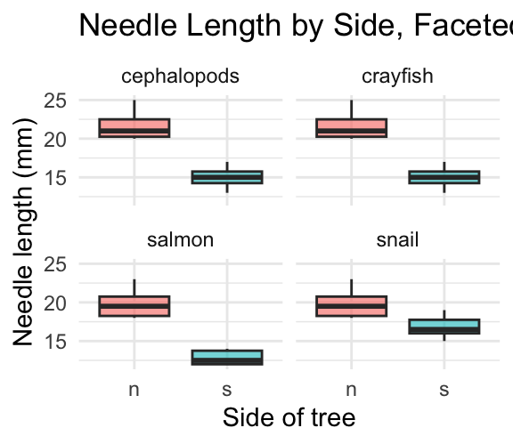
Warning
⚠️ Watch out!
The legend title comes from whatever you write for the aesthetic you mapped — color = "Field team" in labs() relabels a color = mapping. Write fill = "..." instead and it does nothing, because this plot never mapped fill.
Part 3 · Mapping Color by Group
Mapping Color by Group
pine_team_plot <- ggplot(pine_df, aes(x = n_s, y = length_mm, color = group)) +
geom_point(
position = position_jitter(width = 0.15, seed = 42),
size = 2.5,
alpha = 0.8
) +
labs(
title = "Needle Length by Side, Colored by Team",
x = "Side of tree",
y = "Needle length (mm)",
color = "Field team"
) +
theme_minimal(base_size = 9)
pine_team_plot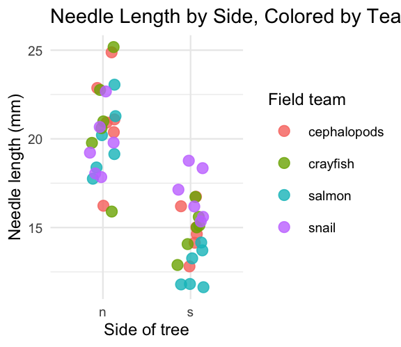
color = groupmaps a third variable onto the plot — no new geom neededggplotauto-builds the legend and picks colors for you- Mapping inside
aes()always means “vary this by data” — not “make everything this color”
Warning
⚠️ Watch out!
color = "steelblue" outside aes() sets one fixed color. color = group inside aes() maps colors to a variable. Mixing these up is one of the most common ggplot mistakes.
Part 3b · Histograms and Density — Seeing the Whole Distribution
Histograms — the Shape Behind the Summary
Note
🔮 Predict first: We found mean(length_mm) ≈ 17.7 in Describing Your Data, with a fairly small gap from the median. What shape do you expect the full distribution to have — symmetric, or skewed?
ggplot(pine_df, aes(x = length_mm)) +
geom_histogram(binwidth = 2, fill = "steelblue", color = "white") +
labs(
title = "Distribution of Needle Length",
x = "Needle length (mm)",
y = "Count"
) +
theme_minimal(base_size = 9)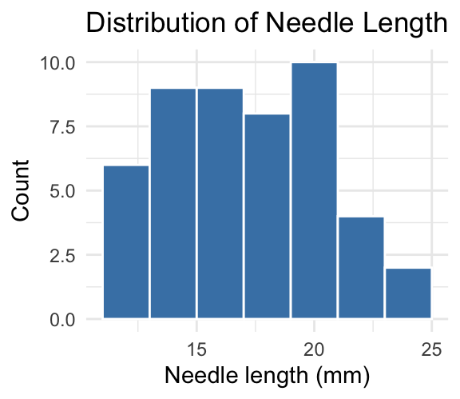
binwidthsets the width of each bar in data units (here, 2mm)- Too wide hides structure; too narrow shows noise — try a few values
Tip
🖐 Try it yourself
Change binwidth = 2 to binwidth = 0.5 and to binwidth = 5. Which tells the real story?
Histograms by Group — fill and facet_wrap() Together
ggplot(pine_df, aes(x = length_mm, fill = n_s)) +
geom_histogram(binwidth = 2, color = "white", alpha = 0.7) +
facet_wrap(~n_s, ncol = 1) +
labs(x = "Needle length (mm)", y = "Count", fill = "Side") +
theme_minimal(base_size = 8) +
theme(legend.position = "none")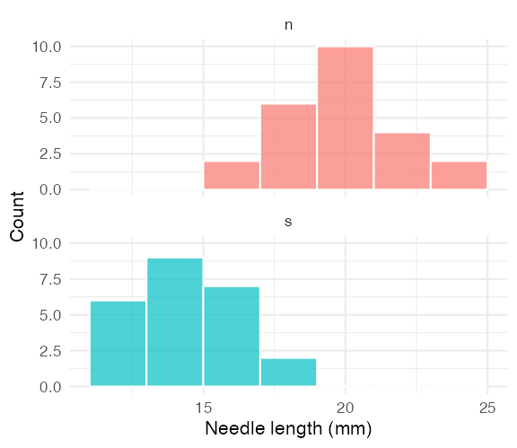
Note
✅ Key idea
Overlapping histograms on one panel are hard to read. Faceting stacks them into separate panels sharing an x-axis — same comparison, much clearer.
Density Curves — a Smoothed Alternative
ggplot(pine_df, aes(x = length_mm, fill = n_s)) +
geom_density(alpha = 0.5) +
labs(
title = "Needle Length Density by Side",
x = "Needle length (mm)",
y = "Density",
fill = "Side"
) +
theme_minimal(base_size = 9)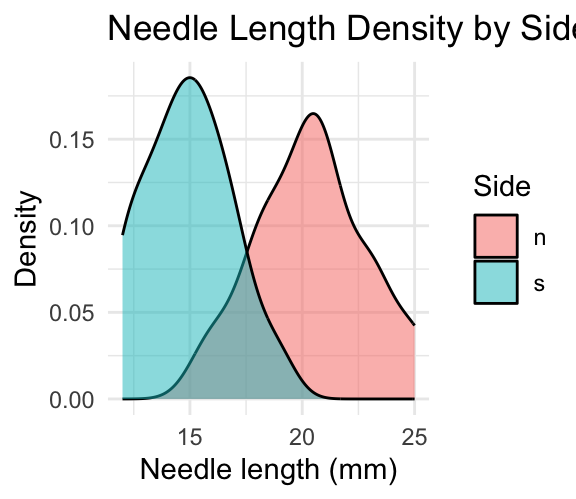
Tip
📖 Histogram vs. density
A density curve is a smoothed histogram, rescaled so the area under each curve sums to 1. It overlays cleanly for group comparisons — no faceting required, at the cost of hiding the raw bin counts.
Part 4 · Mean ± SE — Plotted Directly
Mean ± SE — Plotted Directly
pine_mean_se_plot <- ggplot(pine_df, aes(x = n_s, y = length_mm, color = n_s)) +
geom_point(
position = position_jitter(width = 0.15, seed = 42),
alpha = 0.3,
size = 2
) +
stat_summary(fun = mean, geom = "point", size = 4) +
stat_summary(
fun.data = mean_se,
geom = "errorbar",
width = 0.15,
linewidth = 0.9
) +
labs(
title = "Mean ± SE Needle Length by Side",
x = "Side of tree",
y = "Needle length (mm)"
) +
theme_minimal(base_size = 9) +
theme(legend.position = "none")
pine_mean_se_plot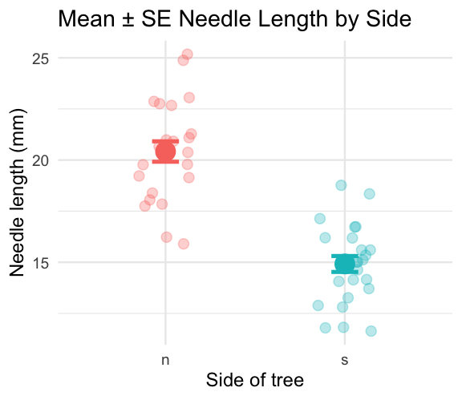
Two stat_summary() layers:
| call | draws |
|---|---|
fun = mean |
one large point at the mean |
fun.data = mean_se |
error bars for ± 1 SE |
stat_summary() computes the mean and SE for you, straight from the raw data — no summarize() step required first.
Note
✅ Key idea
This is the exact same mean and SE you calculated by hand in Describing Your Data — now you can see them.
Part 5 · Faceting — One Panel Per Group
Faceting — One Panel Per Group
pine_facet_plot <- ggplot(pine_df, aes(x = n_s, y = length_mm, fill = n_s)) +
geom_boxplot(alpha = 0.6, outlier.shape = NA) +
facet_wrap(~group) +
labs(
title = "Needle Length by Side, Faceted by Team",
x = "Side of tree",
y = "Needle length (mm)"
) +
theme_minimal(base_size = 7) +
theme(legend.position = "none")
pine_facet_plot
facet_wrap(~group)gives each field team its own small panel- Same x/y scale across panels — easy to compare
- Useful the moment “does every group show the same pattern?” is the real question
Tip
🖐 Notice
A faceted plot answers a different question than a single colored plot: not just “is there an overall pattern,” but “does the pattern hold for everyone?”
Part 6 · A Quick Theme Tour
A Quick Theme Tour
pine_jitter_plot + theme_bw(base_size = 9)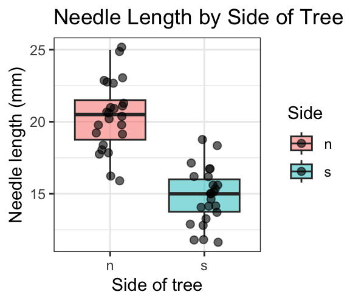
pine_jitter_plot + theme_classic(base_size = 9)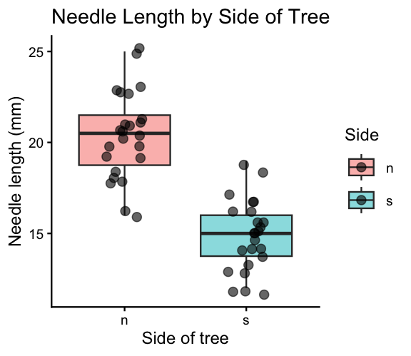
theme_minimal()— light, few gridlines (what we’ve used so far)theme_bw()— white background, black-and-white frametheme_classic()— just x/y axis lines, no gridlines at all
Note
✅ Key idea
A theme changes appearance only — never the data or the statistics underneath. Pick one and use it consistently across a report.
Part 7 · Saving a Real Figure
Saving a Real Figure
ggsave(
"figures/pine_needle_boxplot.png",
plot = pine_jitter_plot,
width = 3,
height = 3,
units = "in",
dpi = 300
)
Warning
⚠️ Watch out!
ggsave() wants the filename first, then plot =. If you skip plot =, it saves whatever plot was drawn last — not necessarily the one you meant.
Note
✅ Key idea
Always set width, height, units, and dpi explicitly. Letting ggsave() guess gives you a plot sized for your screen, not for a report or a poster.
Part 8 · Custom Colors and Legends — scale_color_manual()
scale_color_manual() — Choosing Your Own Colors
Tip
🚀 Advanced / extra work — ggplot’s default colors are fine for exploring data, but a real figure often needs specific colors (journal style, colorblind-safe palettes, matching a poster). This is how you take control.
ggplot(pine_df, aes(x = n_s, y = length_mm, color = n_s)) +
geom_point(
position = position_jitter(width = 0.15, seed = 42),
size = 2.5
) +
stat_summary(fun = mean, geom = "point", size = 4, color = "black") +
scale_color_manual(
name = "Side of tree",
labels = c(n = "Shady (sheltered)", s = "Sunny"),
values = c(n = "#2c7fb8", s = "#d95f0e")
) +
labs(x = "Side of tree", y = "Needle length (mm)") +
theme_minimal(base_size = 9)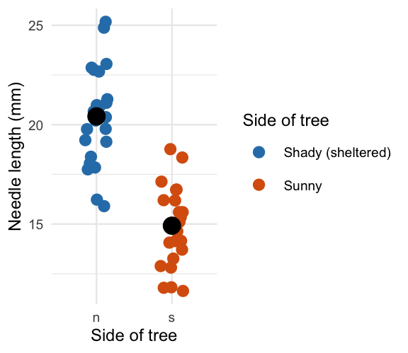
Three arguments, matched by name:
| Argument | Does what |
|---|---|
name |
the legend title |
labels |
text shown for each level |
values |
the actual color for each level |
Note
✅ Key idea
labels and values are both named vectors, keyed by the raw values in your data (n, s) — not by the pretty text you want to display. ggplot looks up each raw value and substitutes the label/color you gave it.
scale_color_manual() — Getting the Names Wrong
# Typo: "sun" instead of the real value "s"
ggplot(pine_df, aes(x = n_s, y = length_mm, color = n_s)) +
geom_point() +
scale_color_manual(
values = c(n = "#2c7fb8", sun = "#d95f0e")
)
Warning
⚠️ Watch out!
Every level that appears in your data must get an entry in values (and in labels, if you supply it), spelled exactly as it appears in the column — check with unique(pine_df$n_s) first if you’re not sure. A missing or misspelled level draws as grey with a warning.
scale_fill_manual() — the fill Twin
ggplot(pine_df, aes(x = n_s, y = length_mm, fill = n_s)) +
geom_boxplot(alpha = 0.7, outlier.shape = NA) +
scale_fill_manual(
name = "Side of tree",
labels = c(n = "Shady (sheltered)", s = "Sunny"),
values = c(n = "#2c7fb8", s = "#d95f0e")
) +
labs(x = "Side of tree", y = "Needle length (mm)") +
theme_minimal(base_size = 9)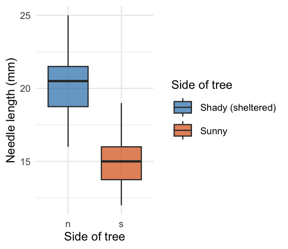
Tip
🖐 Notice
Same three arguments, same pattern — scale_fill_manual() is scale_color_manual() for the fill aesthetic instead of color. A boxplot’s box is fill; its jittered points (if you added geom_point(color = ...)) would be color. A plot can need both at once.
Wrap-up
Today you:
- Built boxplots with raw points overlaid, not hidden
- Wrote real axis labels, titles, and legend titles with
labs()— never shipped a default column name - Mapped a third variable with
color =/fill =insideaes() - Built histograms and density curves to see a whole distribution’s shape
- Plotted mean ± SE directly with
stat_summary()— no separate summary table needed - Faceted a plot with
facet_wrap()to check every group at once - Compared themes, and saved a real, correctly-sized figure with
ggsave() - (Advanced) Set exact colors and legend text by hand with
scale_color_manual()/scale_fill_manual()
Tip
🖐 Before next class
Finish the worksheet: build a mean ± SE plot faceted by group, pick a theme, and save it to figures/ at 3×3in, 300 dpi.
Note
Where this leads
You can now import, wrangle, describe, and visualize a dataset end to end. That full pipeline — raw data → clean → summarize → visualize — is the foundation every later statistical test builds on.
Getting unstuck
When code breaks — and it will, that is normal:
- Read the error message out loud; it usually names the line
- Check the usual suspects:
library(tidyverse)loaded? Iscolor/fillinsideaes()when it should be? ?function_nameopens the help page- Bring the exact error (copy-paste it) to class or office hours
Note
✅ Key idea
Every working scientist googles error messages daily. Getting stuck is not failing — it is the job.